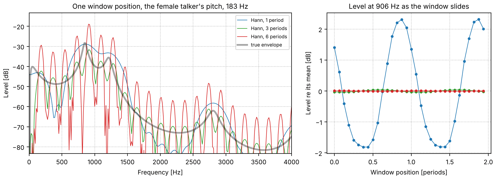
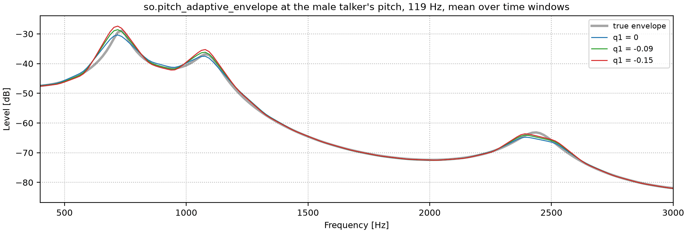
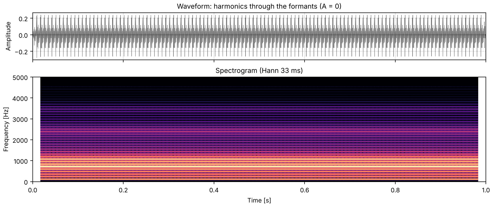
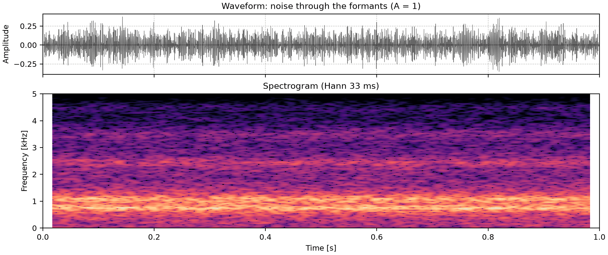
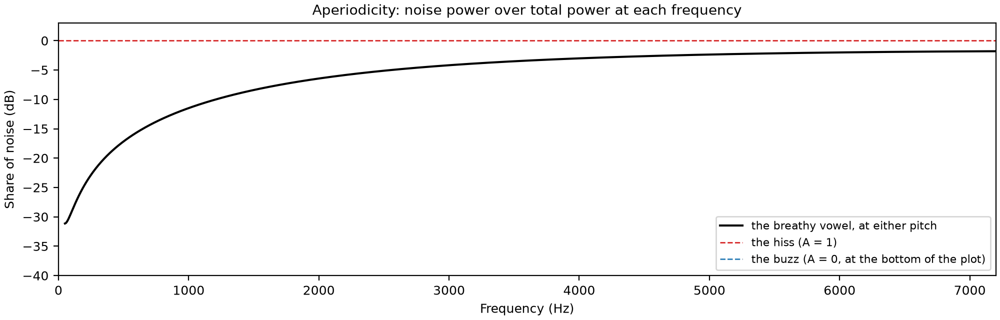
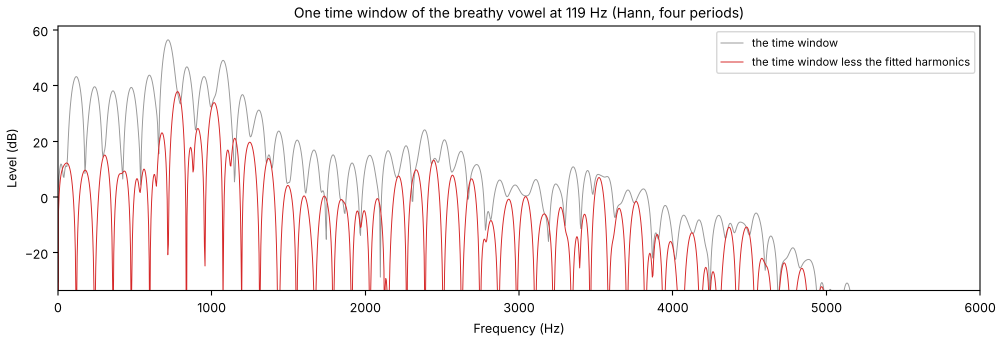
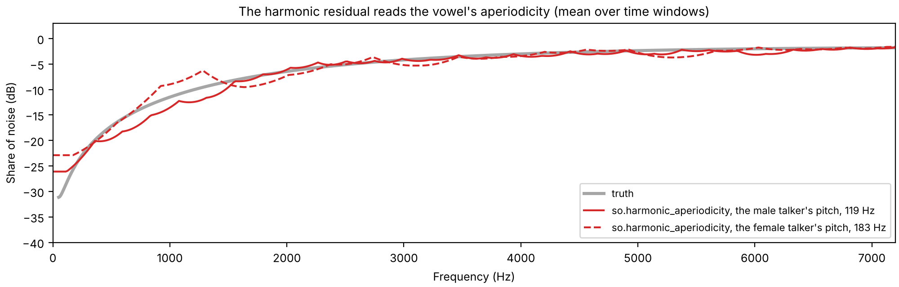
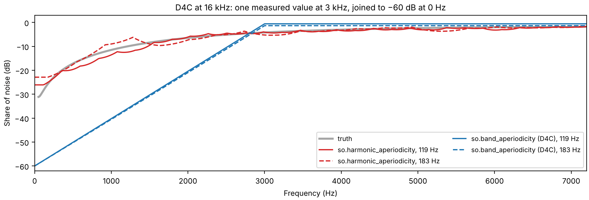
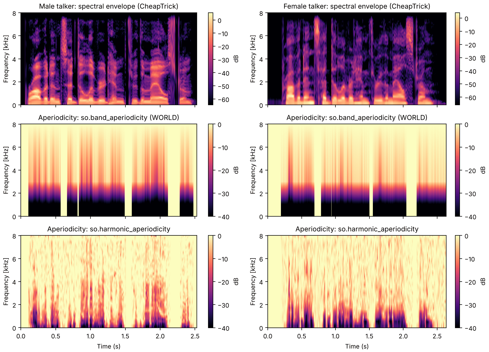
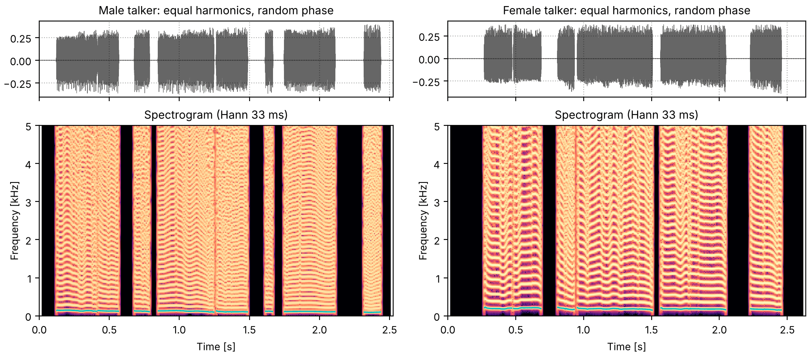

The source-filter model rebuilt each sentence from a pitch track and a
liftered cepstral envelope, and ended on three ways the copy falls
short: the envelope runs under the harmonic peaks,
voicing is all or nothing, and the phases are chosen rather than measured. This page takes them
in that order, and then puts a voice back together from all three.
Each method is built up the same way: what goes wrong without the step, the step in one
sentence, its equation with every symbol named, and what it does to one time window. The names
are those of sonore's code; a symbol is used only where an equation needs one, and is defined
beside it.
Press play and a line follows the sound across every time axis in its plots. Click any time
axis to play from that point. Start with your volume low.
To run this page yourself, open it as a notebook in Colab or download it. It is the same code, and it fetches the recordings it needs from the sonore repository.
The sentence, the vowel, and code the examples share
The sentence both talkers read (What is a voice), with so.f0_track's pitch track
and the track WORLD's Harvest (Morise, 2017) measured on each recording, stored with it.
Beside it, a synthetic vowel whose every part is known: the vowel of "hod", made from Klatt's
(1980) glottal source, the radiation from the lips and five formants, as A vowel, piece by
piece explains; the code is repeated here so that
the page runs on its own. The source is a sum of harmonics at a steady pitch, the median pitch of
each talker's recording, plus, for the second section, white noise. At the male talker's pitch
the vowel has Peterson and Barney's (1952) male formants for "hod", and at the female talker's
pitch their female ones (Six vowels). Since the source and
the filter are known, so are the vowel's true envelope and its true aperiodicity.
Setup, the same on every page
import os
import urllib.request
import matplotlib.pyplot as plt
import numpy as np
import sonore as so
plt.rcParams.update({"font.size": 9, "axes.titlesize": 10, "figure.dpi": 100})
def fetch(path):
"""A file from the sonore repository, by its path there: the local copy when this runs from
the repository root, otherwise downloaded from GitHub to the same relative path."""
if not os.path.exists(path):
os.makedirs(os.path.dirname(path) or ".", exist_ok=True)
urllib.request.urlretrieve("https://raw.githubusercontent.com/choyun1/sonore/main/" + path, path)
return path
def finish(snd):
"""How every sound in the gallery is played: 5 ms ramps, RMS 0.1, peak at most 0.95."""
snd = snd.ramp(5e-3).normalize(rms=0.1)
return snd.normalize(peak=0.95) if snd.peak > 0.95 else snd
Code
# The two talkers, by the CMU ARCTIC speaker names. Sources: docs/speech/SOURCES.md.
SPEAKERS = {"Male talker": "bdl", "Female talker": "slt"}
talkers = {
label: finish(so.load(fetch(f"docs/speech/{speaker}_arctic_a0131.flac")))
for label, speaker in SPEAKERS.items()
}
tracks = {label: so.f0_track(snd) for label, snd in talkers.items()}
medians = {label: float(np.median(track.f0[0][track.voiced[0]])) for label, track in tracks.items()}
harvest = {}
for label, speaker in SPEAKERS.items():
harvest_times, harvest_f0 = np.loadtxt(
fetch(f"docs/speech/{speaker}_arctic_a0131_f0.csv"), delimiter=",", skiprows=2
).T
harvest[label] = (harvest_times, harvest_f0)
for label, f0 in medians.items():
print(f"{label}: median F0 {f0:.1f} Hz")
FS = 16000
DUR = 1.0
# "Hod" for each talker's pitch, (frequency, bandwidth) in Hz: Peterson and Barney's male and
# female F1 to F3, and F4 and F5 as on the source-filter page.
HOD = {
"Male talker": [(730, 60), (1090, 90), (2440, 150), (3500, 200), (4500, 250)],
"Female talker": [(850, 60), (1220, 90), (2810, 150), (4100, 200), (4900, 250)],
}
def contour_of(track):
"""The times and F0 values of a track (an F0Track or a (times, values) pair), NaN where
unvoiced, for drawing."""
times, values = (track.t, track.f0[0]) if hasattr(track, "f0") else track
return times, np.where(np.asarray(values) > 0, values, np.nan)
def draw(container, snd, title, fmax, contour=None):
"""Waveform and narrowband spectrogram (Hann 33 ms, harmonics resolved), on one time axis, in
a figure or subfigure, with an F0 contour over the spectrogram if one is given. Returns the two
panels, for the playhead."""
ax0, ax1 = container.subplots(2, 1, sharex=True, height_ratios=[0.45, 1])
snd.plot(ax0, color="k", lw=0.4)
ax0.set(title=title, xlabel="")
so.STFT(snd, win_dur=0.0333, hop_dur=0.002).plot(ax1, db_range=70, colorbar=False, fmax=fmax)
ax1.set_title("Spectrogram (Hann 33 ms)")
if contour is not None:
times, values = contour_of(contour)
ax1.plot(times, values / 1000, color="c", lw=1.2) # the spectrogram's axis is in kHz
for ax in (ax0, ax1):
ax.set_xlim(0, snd.duration)
return [ax0, ax1]
def show(snd, title, fmax=5000):
fig = plt.figure(figsize=(10, 4.2), layout="constrained")
return fig, draw(fig, snd, f"Waveform: {title}", fmax)
def show_pair(sounds, titles, fmax=5000, contours=None):
"""One column per sound; `titles` maps each sound's label to its column's title, and
`contours`, if given, to an F0 track drawn over its spectrogram."""
fig = plt.figure(figsize=(10, 4.4), layout="constrained")
columns = fig.subfigures(1, 2)
playhead = {
label: draw(column, snd, titles[label], fmax, None if contours is None else contours[label])
for column, (label, snd) in zip(columns, sounds.items(), strict=True)
}
return fig, playhead
def titled(what):
return {label: f"{label}: {what}" for label in talkers}
def formants(snd, table):
for freq, bandwidth in table:
snd = so.resonator(snd, freq, bandwidth)
return snd
# Klatt's glottal source and the radiation from the lips, and the formants, as gains at any
# frequency: the spectra of their impulse responses.
impulse = so.Sound(np.r_[1.0, np.zeros(2**14 - 1)], FS)
glottal_gain = np.abs(np.fft.rfft(so.resonator(impulse, 0, 100).data[:, 0]))
gain_freqs = np.fft.rfftfreq(2**14, 1 / FS)
tract_gains = {
label: np.abs(np.fft.rfft(formants(impulse, table).data[:, 0])) for label, table in HOD.items()
}
def source_gain(f):
return np.interp(f, gain_freqs, glottal_gain) * np.abs(2 * np.sin(np.pi * np.asarray(f) / FS))
def true_envelope_db(f, label):
"""The vowel's envelope in dB, up to a constant: source times radiation times formants."""
return 20 * np.log10(source_gain(f) * np.interp(f, gain_freqs, tract_gains[label]) + 1e-12)
def breathy_source(f0):
"""Harmonics of f0 with Klatt's source spectrum, up to 7.2 kHz, and white noise with the
harmonics' power per hertz at 4 kHz."""
harmonic_numbers = np.arange(1, int(0.45 * FS / f0) + 1)
buzz = so.harmonic_complex(
DUR, FS, f0, harmonics=harmonic_numbers, amplitudes=lambda t, f: source_gain(f)
)
# harmonic_complex scales its output to RMS 1; the harmonics' power per hertz near f is then
# (scale * gain(f))^2 / 2 per harmonic, one harmonic every f0 hertz
scale = 1 / np.sqrt(np.sum(source_gain(harmonic_numbers * f0) ** 2) / 2)
noise_density = (scale * source_gain(4000.0)) ** 2 / 2 / f0
hiss = so.gaussian_noise(DUR, FS, rng=1) * np.sqrt(noise_density * FS / 2) # white: flat density
return buzz, hiss
def true_aperiodicity(f):
"""The share of noise at f, from the source alone. With the noise as strong as the harmonics
at 4 kHz it is the same at any pitch."""
return 1 / (1 + (source_gain(f) / source_gain(4000.0)) ** 2)
sources = {label: breathy_source(f0) for label, f0 in medians.items()}
buzz_vowels = {label: formants(buzz, HOD[label]) for label, (buzz, _) in sources.items()}
vowels = {label: formants(buzz + hiss, HOD[label]) for label, (buzz, hiss) in sources.items()}
window_times = np.arange(0, DUR, 0.005)
exact = {label: (window_times, np.full(len(window_times), f0)) for label, f0 in medians.items()} # every 5 ms
inside = (window_times > 0.1) & (window_times < 0.9) # time windows away from the ends
pitch_names = {label: f"the {label.lower()}'s pitch, {f0:.0f} Hz" for label, f0 in medians.items()}
Male talker: median F0 119.4 Hz
Female talker: median F0 182.7 Hz
An envelope measured to the pitch period
The spectral envelope is the smooth curve the vocal tract lays over the harmonics. Measured from
one time window, it has to come from a spectrum that is not smooth: the harmonics of a voiced
sound sample the envelope only every F_0 hertz. Every method below starts from the power
spectrum of the sound under a window w, centered at time t and scaled to unit energy so that
its level does not depend on the window's length,
P(t, f) = \frac{\bigl|\sum_n w(n - t f_s)\, x(n)\, e^{-2\pi i f n / f_s}\bigr|^2}{\sum_n w(n)^2},
with x(n) the sound's samples and f_s the sampling rate.
A fixed window ripples
For a periodic sound no window length gives a smooth envelope. A window shorter than a period
smears the harmonics together, so the spectrum is smooth across frequency; but the window then
holds a different part of the period at each position, and the power at every frequency rises
and falls with period 1/F_0 as the window slides. A window several periods long holds the same
amount of the sound wherever it is, so the power is steady over time; but it resolves the
harmonics, and the spectrum ripples across frequency, high at each harmonic and low between.
The cell measures both on the vowel's buzz alone (harmonics, no noise) at each talker's pitch,
for Hann windows of one to six periods: across frequency, the standard deviation of the
spectrum's distance from the true envelope from 200 Hz to 4 kHz; over time, the standard deviation
of each frequency's level as the window slides over one period, the median over frequencies.
Code
N_FFT = 1024
spectrum_freqs = np.fft.rfftfreq(N_FFT, 1 / FS)
band = (spectrum_freqs > 200) & (spectrum_freqs < 4000)
def hann_power(samples, center, length, shape="hann"):
"""P(t, f) at sample `center` under a window `length` samples long (may be fractional): Hann,
or Blackman, scaled to unit energy."""
offsets = np.arange(-int(np.ceil(length / 2)), int(np.ceil(length / 2)) + 1)
phase = 2 * np.pi * offsets / length
weights = (
0.5 + 0.5 * np.cos(phase)
if shape == "hann"
else 0.42 + 0.5 * np.cos(phase) + 0.08 * np.cos(2 * phase)
)
weights[np.abs(offsets) >= length / 2] = 0
segment = samples[int(round(center)) + offsets] * weights
return np.abs(np.fft.rfft(segment / np.sqrt(np.sum(weights**2)), N_FFT)) ** 2
def ripples(label, periods, shape="hann", pair=False):
"""The ripple across frequency and over time (dB) of windows `periods` long, over 16
positions within one period at 0.5 s; with `pair`, each position's power is TANDEM's
average of two windows a quarter period before and after it."""
samples, period = buzz_vowels[label].data[:, 0], FS / medians[label]
levels = []
for step in range(16):
center = 0.5 * FS + step / 16 * period
if pair:
power = (
hann_power(samples, center - period / 4, periods * period, shape)
+ hann_power(samples, center + period / 4, periods * period, shape)
) / 2
else:
power = hann_power(samples, center, periods * period, shape)
levels.append(10 * np.log10(power + 1e-12))
levels = np.array(levels)
truth = true_envelope_db(spectrum_freqs, label)
across = np.median([np.std((level - truth)[band]) for level in levels])
over_time = np.median(np.std(levels[:, band], axis=0))
return levels, across, over_time
print(f"{'[dB]':<34}{'off the envelope':>18}{'flicker':>12}")
ripple = {}
for label in talkers:
for periods in (1, 2, 3, 6):
ripple[label, periods] = ripples(label, periods)
_, across, over_time = ripple[label, periods]
print(
f"{label + f', Hann {periods} period' + 's' * (periods > 1):<34}{across:>18.1f}{over_time:>12.2f}"
)
[dB] off the envelope flicker
Male talker, Hann 1 period 3.5 7.73
Male talker, Hann 2 periods 1.9 1.01
Male talker, Hann 3 periods 4.2 0.15
Male talker, Hann 6 periods 16.2 0.09
Female talker, Hann 1 period 4.7 6.00
Female talker, Hann 2 periods 3.2 1.07
Female talker, Hann 3 periods 4.9 0.17
Female talker, Hann 6 periods 16.7 0.11
The ripple trade, across frequency and over time
The vowel's buzz at the female talker's pitch, where the harmonics are farther apart. Left: one
window position, for windows one, three and six periods long, against the true envelope (each
shifted to it). Right: the level at the harmonic nearest F1 as the window slides over two
periods.

Code
label = "Female talker"
period, truth = FS / medians[label], true_envelope_db(spectrum_freqs, label)
probe = int(np.argmin(np.abs(spectrum_freqs - round(850 / medians[label]) * medians[label])))
fig, (left, right) = plt.subplots(1, 2, figsize=(10, 3.6), layout="constrained", width_ratios=[1.6, 1])
for periods, color in zip((1, 3, 6), ("C0", "C2", "C3"), strict=True):
levels = ripple[label, periods][0]
offset = np.median((levels[0] - truth)[band])
left.plot(
spectrum_freqs,
levels[0] - offset,
color=color,
lw=0.8,
label=f"Hann, {periods} period" + "s" * (periods > 1),
)
positions = np.arange(32) / 16
slid = [
10
* np.log10(hann_power(buzz_vowels[label].data[:, 0], 0.5 * FS + p * period, periods * period)[probe])
for p in positions
]
right.plot(positions, np.array(slid) - np.mean(slid), color=color, marker=".", lw=0.8)
left.plot(spectrum_freqs, truth, color="k", lw=2.5, alpha=0.35, label="true envelope")
left.set(
xlim=(0, 4000),
ylim=(truth[band].max() - 55, truth[band].max() + 15),
xlabel="Frequency [Hz]",
ylabel="Level [dB]",
title=f"One window position, {pitch_names[label]}",
)
left.legend(loc="upper right", fontsize=7)
right.set(
xlabel="Window position [periods]",
ylabel="Level re its mean [dB]",
title=f"Level at {spectrum_freqs[probe]:.0f} Hz as the window slides",
)
for ax in (left, right):
ax.grid(ls=":")
No length does well on both. The flicker over time falls from several decibels at one period
to a tenth of a decibel at three, while the spectrum departs from the envelope across frequency
as the harmonics are resolved, by about 16 dB at six periods. The one-period window departs from
it as well, because it smears the formants. The pitch-adaptive methods do not look for a
compromise length; each one removes one of the two ripples by construction and then smooths the
other away.
STRAIGHT
STRAIGHT (Kawahara, Masuda-Katsuse & de Cheveigné, 1999) was the first to tie the analysis to the
pitch. Its window is a Gaussian whose width is a fixed multiple of the period T_0 = 1/F_0,
so that the harmonics are separated equally well at every pitch. The ripple across frequency is
then smoothed in frequency, with a triangular kernel as wide as the harmonic spacing F_0,
which interpolates between the harmonic peaks rather than averaging them with the dips. The
ripple over time is filled by a second, complementary window, the first one multiplied by
\sin(\pi t / T_0), whose power peaks where the first one's dips; the two powers P and P_c
are combined as
with \xi a constant the paper chose to leave the least fluctuation. sonore has no STRAIGHT
code; this section only describes it.
TANDEM-STRAIGHT
TANDEM-STRAIGHT (Kawahara et al., 2011) removes the ripple over time more simply. The flicker of
a window's power repeats once a period, so at two positions half a period apart its
fundamental is in opposite phase, and their average cancels it:
with Blackman windows 2.5 periods long. Seeing speech draws
this power spectrogram, as so.tandem_power. The cell measures the flicker of one Blackman
window and of TANDEM's pair, on the same buzz.
Code
print(f"{'Ripple over time [dB]':<34}{'one window':>12}{'TANDEM pair':>13}")
for label in talkers:
single, pair = ripples(label, 2.5, "blackman")[2], ripples(label, 2.5, "blackman", pair=True)[2]
print(f"{label + ', Blackman 2.5 periods':<34}{single:>12.2f}{pair:>13.2f}")
Ripple over time [dB] one window TANDEM pair
Male talker, Blackman 2.5 periods 0.96 0.01
Female talker, Blackman 2.5 periods 1.03 0.02
CheapTrick, step by step
CheapTrick (Morise, 2015), so.pitch_adaptive_envelope in sonore, keeps TANDEM's idea of a
window steady over time, in its simplest form, and replaces STRAIGHT's smoothing by three short
steps.
1. The window. A Hann window three periods long: as the table above shows, its power hardly
changes with its position in the period, so no second window is needed.
2. The smoothing. A moving average across frequency over 2F_0/3,
which fills the dips between harmonics, so that the logarithm can be taken, without yet
removing the ripple.
3. The lifter. The cepstrum c(\tau) of \log P_s, at quefrencies \tau in seconds, is
multiplied by two lifters and transformed back:
The smoothing lifter l_s is a moving average over one harmonic spacing, which removes the
ripple at F_0. The recovery lifter l_r gives back the sharpness that the two moving
averages took from the envelope's peaks; q1 sets how much, and the paper's value is
-0.09.
The cell writes the three steps out with NumPy at one time window of the female talker's buzz,
and compares the result with so.pitch_adaptive_envelope.
Code
label = "Female talker"
F0, samples = medians[label], buzz_vowels[label].data[:, 0]
power = hann_power(samples, 0.5 * FS, 3 * FS / F0) # step 1
# step 2: the moving average over 2 F0 / 3, on a grid eight times finer than the FFT's, with the
# spectrum mirrored about 0 Hz and Nyquist, as a real signal's spectrum continues there
mirrored = np.concatenate([power[:0:-1], power, power[-2::-1]])
fine = np.interp(np.arange(0, len(mirrored) - 1, 1 / 8), np.arange(len(mirrored)), mirrored)
half_width = int(round(F0 / 3 / (FS / N_FFT) * 8))
fine_smoothed = np.convolve(fine, np.ones(2 * half_width + 1) / (2 * half_width + 1), mode="same")
smoothed = fine_smoothed[::8][len(power) - 1 : 2 * len(power) - 1]
# step 3: the cepstrum of the log power, the two lifters, and back
cepstrum = np.fft.irfft(np.log(smoothed), N_FFT)
quefrency = np.minimum(np.arange(N_FFT), N_FFT - np.arange(N_FFT)) / FS
def liftered(q1):
lifters = np.sinc(F0 * quefrency) * ((1 - 2 * q1) + 2 * q1 * np.cos(2 * np.pi * F0 * quefrency))
return np.exp(np.fft.rfft(lifters * cepstrum, N_FFT).real)
steps = {
"1. Hann, three periods": power,
"2. smoothed over 2 F0 / 3": smoothed,
"3. liftered, q1 = −0.09": liftered(-0.09),
}
library = so.pitch_adaptive_envelope(buzz_vowels[label], exact[label])
library_db = 10 * np.log10(library(np.array([0.5]), spectrum_freqs)[0, :, 0])
below_7k = spectrum_freqs < 7000
print(
f"largest difference from so.pitch_adaptive_envelope below 7 kHz: "
f"{np.max(np.abs(10 * np.log10(steps['3. liftered, q1 = −0.09']) - library_db)[below_7k]):.2f} dB"
)
truth = true_envelope_db(spectrum_freqs, label)
for name, step in steps.items():
print(
f"{name:<28} distance from the true envelope (SD, 200 Hz to 4 kHz): "
f"{np.std((10 * np.log10(step + 1e-12) - truth)[band]):.1f} dB"
)
largest difference from so.pitch_adaptive_envelope below 7 kHz: 0.14 dB
1. Hann, three periods distance from the true envelope (SD, 200 Hz to 4 kHz): 5.0 dB
2. smoothed over 2 F0 / 3 distance from the true envelope (SD, 200 Hz to 4 kHz): 2.1 dB
3. liftered, q1 = −0.09 distance from the true envelope (SD, 200 Hz to 4 kHz): 1.6 dB
The steps as written here differ from the library's by a fraction of a decibel, because the
library takes the moving average as an exact integral rather than on a finer grid. Each step
brings the curve closer to the true envelope.
The three steps of CheapTrick on one time window
The three steps at one time window of the female talker's buzz, each shifted onto the true
envelope. The window's power has a peak at every harmonic; the moving average fills the dips;
the lifters remove the ripple that is left.
With q1 = 0 the recovery lifter is 1 and the envelope's peaks come out lower than the true
ones, flattened by the two moving averages; more negative values sharpen them again. The cell
measures how far each formant's peak lies from the true one's, after the curve is shifted onto
the true envelope, at each talker's pitch. (WORLD's code later used -0.15 in place of the
paper's value.)
Code
Q1 = (0.0, -0.09, -0.15)
envelope_freqs = None
q1_envelopes = {}
for label in talkers:
for q1 in Q1:
envelope = so.pitch_adaptive_envelope(buzz_vowels[label], exact[label], q1=q1)
envelope_freqs = envelope.f
q1_envelopes[label, q1] = 10 * np.log10(envelope.data[0][:, inside].mean(axis=1))
print(f"{'Peak re the true peak [dB]':<38}{'F1':>7}{'F2':>7}{'F3':>7}")
for label in talkers:
truth = true_envelope_db(envelope_freqs, label)
in_band = (envelope_freqs > 200) & (envelope_freqs < 4000)
for q1 in Q1:
envelope_db = q1_envelopes[label, q1]
shifted = envelope_db - np.median((envelope_db - truth)[in_band])
heights = []
for formant, _ in HOD[label][:3]:
near = np.abs(envelope_freqs - formant) < 0.15 * formant
heights.append(shifted[near].max() - truth[near].max())
print(f"{label + f', q1 = {q1:g}':<38}" + "".join(f"{height:>7.1f}" for height in heights))
Peak re the true peak [dB] F1 F2 F3
Male talker, q1 = 0 -1.5 -0.7 -1.6
Male talker, q1 = -0.09 0.3 0.7 -0.9
Male talker, q1 = -0.15 1.5 1.6 -0.5
Female talker, q1 = 0 -7.1 -3.4 -2.8
Female talker, q1 = -0.09 -5.9 -3.1 -1.8
Female talker, q1 = -0.15 -5.2 -2.9 -1.1
At the male talker's pitch q1 = 0 leaves the peaks a decibel or so low, the paper's -0.09
puts them within about a decibel of the truth, and -0.15 overshoots F1 and F2. At the female
talker's pitch every peak comes out low, by a few decibels, whatever q1 is. The formants'
bandwidths, 60 to 150 Hz, are narrower than that voice's harmonic spacing, so a true peak can
fall between two harmonics, where no time window has any power to measure. q1 sharpens what
the harmonics sampled, but no envelope estimator can recover what they did not.
The recovery lifter, three ways
The envelope from F1 to F3 at the male talker's pitch, for three values of q1, against the
true envelope, each shifted onto it.

Code
label = "Male talker"
truth = true_envelope_db(envelope_freqs, label)
in_band = (envelope_freqs > 200) & (envelope_freqs < 4000)
fig, ax = plt.subplots(figsize=(10, 3.4), layout="constrained")
ax.plot(envelope_freqs, truth, color="k", lw=2.5, alpha=0.35, label="true envelope")
for q1, color in zip(Q1, ("C0", "C2", "C3"), strict=True):
envelope_db = q1_envelopes[label, q1]
ax.plot(
envelope_freqs,
envelope_db - np.median((envelope_db - truth)[in_band]),
color=color,
lw=1,
label=f"q1 = {q1:g}",
)
near = (envelope_freqs > 400) & (envelope_freqs < 3000)
ax.set(
xlim=(400, 3000),
ylim=(truth[near].min() - 5, truth[near].max() + 5),
xlabel="Frequency [Hz]",
ylabel="Level [dB]",
title=f"so.pitch_adaptive_envelope at {pitch_names[label]}, mean over time windows",
)
ax.legend(loc="upper right", fontsize=8)
ax.grid(ls=":")
Against the lifter, on a recording
On the recordings there is no true envelope, but CheapTrick can be set beside the cepstral
lifter of One time window. The lifter keeps the
quefrencies below half a period of the log spectrum itself, so it averages the harmonic peaks
with the dips between them, and its envelope runs under the peaks. The cell measures how far
above each envelope the harmonic peaks up to 4 kHz rise, in one time window of a vowel of each
sentence: the median, and how much that varies from harmonic to harmonic. CheapTrick's window
has unit energy, so its level is not comparable with the STFT's; only its spread is.
Code
stfts = {label: so.STFT(snd, win_dur=0.040, hop_dur=0.005) for label, snd in talkers.items()}
cepstra = {label: so.Cepstrum(stft) for label, stft in stfts.items()}
envelopes = {label: so.pitch_adaptive_envelope(snd, tracks[label]) for label, snd in talkers.items()}
TIMES = {"Male talker": 0.50, "Female talker": 0.60} # one time window in a vowel of each sentence
window = {}
for label, cep in cepstra.items():
t, f0, peak = cep.f0()
i = int(np.argmin(np.abs(t - TIMES[label])))
window[label] = {"i": i, "t": t[i], "f0": f0[0, i], "cutoff": 0.5 / f0[0, i]}
def above_envelope(label, envelope_db):
"""How far each harmonic peak up to 4 kHz rises above an envelope (dB), in one time window."""
stft, w = stfts[label], window[label]
spectrum_db = 20 * np.log10(np.abs(stft.data[0, :, w["i"]]))
gaps = []
for harmonic in range(1, int(4000 / w["f0"]) + 1):
near = np.nonzero(np.abs(stft.f - harmonic * w["f0"]) < w["f0"] / 2)[0]
top = near[np.argmax(spectrum_db[near])]
gaps.append(spectrum_db[top] - envelope_db[top])
return np.array(gaps)
lifted, cheaptrick_db = {}, {}
for label, cep in cepstra.items():
w = window[label]
lifted[label] = 20 * np.log10(cep.lifter(w["cutoff"]).envelope()[0, :, w["i"]])
cheaptrick_db[label] = 10 * np.log10(envelopes[label](np.array([w["t"]]), stfts[label].f)[0, :, 0])
for name, envelope_db in (("lifter", lifted[label]), ("CheapTrick", cheaptrick_db[label])):
gaps = above_envelope(label, envelope_db)
level = f"median {np.median(gaps):5.1f} dB above, " if name == "lifter" else " " * 21
print(f"{label:14} {name:11}: {level}spread (SD) {np.std(gaps):.1f} dB")
Male talker lifter : median 7.4 dB above, spread (SD) 3.7 dB
Male talker CheapTrick : spread (SD) 1.8 dB
Female talker lifter : median 15.6 dB above, spread (SD) 5.1 dB
Female talker CheapTrick : spread (SD) 1.5 dB
The lifter and CheapTrick on one time window
One time window of each talker's sentence: the log spectrum, the envelope liftered below half a
period, and CheapTrick's envelope, its level matched to the harmonic peaks (by the median above).
The female talker's liftered envelope runs farther below the harmonic peaks.
For both talkers CheapTrick's envelope follows the harmonic peaks more evenly than the lifter's
does, and the lifter's falls farther behind for the higher voice. CheapTrick's is the envelope
the rest of this page uses.
A source that is partly noise
In the first-order source-filter picture a voice's source is either a buzz (voiced) or a hiss
(unvoiced). A vocoder such as WORLD (Morise, Yokomori & Ozawa, 2016) keeps three things instead
of two: the pitch, a smooth spectral envelope, and an aperiodicity. The aperiodicity replaces
the voicing switch. At every frequency it says what share of the power is noise rather than
harmonics,
A(f) = \frac{N(f)}{N(f) + P(f)},
with N the power of the noise and P that of the harmonics at f. The buzz is A = 0
everywhere and the hiss is A = 1; a voice is in between, and usually more so at high
frequencies, so it can be clearly periodic at 500 Hz and mostly noise at 5 kHz. The vowel's
harmonics fall about 6 dB per octave and its noise is flat, so its share of noise rises about
6 dB per octave; the noise is set as strong as the harmonics at 4 kHz.
Buzz, hiss, and both
The first-order picture has two settings of the source, and the voice in between. The first
two sounds are at the male talker's pitch.
The buzz alone
The buzz alone: harmonics through the formants, A = 0 everywhere. Every frequency is
periodic: the spectrogram shows harmonics all the way up, with nothing between them.
ap1_the_buzz_alone.flac, 1.0 s, mono

Code
sound = finish(buzz_vowels["Male talker"])
fig, playhead = show(sound, "harmonics through the formants (A = 0)")
The hiss alone
The hiss alone: white noise through the same formants, A = 1 everywhere. The vowel is still
there, whispered, because the formants are.
ap2_the_hiss_alone.flac, 1.0 s, mono

Code
sound = finish(formants(sources["Male talker"][1], HOD["Male talker"]))
fig, playhead = show(sound, "noise through the formants (A = 1)")
A breathy vowel
Both together, at each talker's pitch. Below about 1 kHz the harmonics stand well above the noise;
above 3 kHz the noise fills in between them and then covers them. This is what makes a voice
breathy: neither switch setting, but a mixture whose proportion changes with frequency. At the
female talker's pitch the harmonics are farther apart, and the noise shows in wider gaps between
them (see Harmonics sample the envelope).
The source-filter model makes a breathy vowel with Klatt's aspiration
noise.
sounds = {label: finish(vowel) for label, vowel in vowels.items()}
fig, playhead = show_pair(sounds, {label: f"Harmonics and noise, {pitch_names[label]}" for label in sounds})
Its aperiodicity is the noise's share of the source at each frequency. The harmonics and the
noise both pass through the same filter H, so the share after it is
the filter cancels. The aperiodicity is a property of the source, measured on the output,
and it can be changed without touching the formants, and the formants without touching it.
Here it is also the same at both pitches, since the noise is set against the harmonics at
4 kHz in both.
Aperiodicity of the vowel, from its source

Code
freqs = np.linspace(50, 7200, 1000)
fig, ax = plt.subplots(figsize=(10, 3.2), layout="constrained")
ax.plot(freqs, 10 * np.log10(true_aperiodicity(freqs)), color="k", label="the breathy vowel, at either pitch")
ax.axhline(0, color="C3", ls="--", lw=1, label="the hiss (A = 1)")
ax.axhline(-40, color="C0", ls="--", lw=1, label="the buzz (A = 0, at the bottom of the plot)")
ax.set(xlabel="Frequency (Hz)", ylabel="Share of noise (dB)", xlim=(0, 7200), ylim=(-40, 3))
ax.set_title("Aperiodicity: noise power over total power at each frequency")
ax.legend(loc="lower right", fontsize=8)
Fit the harmonics, keep the rest
The definition suggests the measurement: find the best periodic sound, take it away, and see
how much is left. If the pitch is known, the periodic part of a short stretch is a sum of
harmonics whose phases follow the running phase \Phi(t) = 2\pi \int F_0, each with an amplitude
and a phase to be found. That is a linear least-squares fit. Here is one time window of the vowel
at the male talker's pitch, under a Hann window four periods long, with each harmonic also allowed
an amplitude that changes linearly across the window.
Code
vowel, F0 = vowels["Male talker"], medians["Male talker"]
center = int(0.5 * FS) # the time window at 0.5 s
half = int(round(2 * FS / F0)) # half of four periods
offsets = np.arange(-half, half + 1)
fit_window = 0.5 + 0.5 * np.cos(np.pi * offsets / (half + 1))
phase = 2 * np.pi * F0 * offsets / FS # the running phase over the time window
harmonic_phases = np.outer(phase, np.arange(1, int(FS / 2 / F0) + 1))
ramp = (offsets / half)[:, None]
columns = np.column_stack(
[np.ones(len(offsets)), np.cos(harmonic_phases), np.sin(harmonic_phases)]
+ [ramp * np.cos(harmonic_phases), ramp * np.sin(harmonic_phases)]
)
segment = vowel.data[center + offsets, 0]
root_window = np.sqrt(fit_window) # weighted least squares: minimize the windowed residual
weights, *_ = np.linalg.lstsq(columns * root_window[:, None], segment * root_window, rcond=None)
residual = segment - columns @ weights
print(f"{columns.shape[1]} columns fitted to {len(offsets)} samples")
residual_power, signal_power = np.sum((fit_window * residual) ** 2), np.sum((fit_window * segment) ** 2)
print(f"windowed residual power over windowed signal power: {residual_power / signal_power:.3f}")
265 columns fitted to 537 samples
windowed residual power over windowed signal power: 0.013
One time window, before and after the harmonics are taken away
The time window's spectrum, and the spectrum of what is left after the fit. The harmonic peaks
are gone from the residual, and what remains is the noise between and under them. Where the
noise was below the harmonics (low frequencies) the residual lies far below the time window's
spectrum; above 4 kHz the two are close. Their ratio, read across frequency, is the
aperiodicity.

Code
fit_fft = 4096
segment_freqs = np.fft.rfftfreq(fit_fft, 1 / FS)
segment_db = 20 * np.log10(np.abs(np.fft.rfft(fit_window * segment, fit_fft)) + 1e-12)
residual_db = 20 * np.log10(np.abs(np.fft.rfft(fit_window * residual, fit_fft)) + 1e-12)
fig, ax = plt.subplots(figsize=(10, 3.4), layout="constrained")
ax.plot(segment_freqs, segment_db, color="0.6", lw=0.7, label="the time window")
ax.plot(segment_freqs, residual_db, color="C3", lw=0.7, label="the time window less the fitted harmonics")
top = segment_db.max() + 5
ax.set(xlabel="Frequency (Hz)", ylabel="Level (dB)", xlim=(0, 6000), ylim=(top - 95, top))
ax.set_title(f"One time window of the breathy vowel at {F0:.0f} Hz (Hann, four periods)")
ax.legend(loc="upper right", fontsize=8)
so.harmonic_aperiodicity does this at every time window. It adds one correction: the fit also
absorbs a little of the noise, the part that happens to look like the harmonics near each
harmonic frequency, so the residual is a little too small there. How much is known exactly from
the fit itself (it is what the fit would do to white noise), and is divided out. The shares are
then summed over cells two harmonics wide and put on the frequency grid of the envelope.
At the female talker's pitch the same window, four periods long, is shorter, and the vowel has
fewer harmonics to fit:
Code
residual_shares = {label: so.harmonic_aperiodicity(vowels[label], exact[label]) for label in vowels}
for label, f0 in medians.items():
share = residual_shares[label]
error_db = 10 * np.log10(share.share[0][:, inside].mean(axis=1) / true_aperiodicity(share.f))
low, high = np.percentile(error_db[(share.f >= 300) & (share.f <= 7000)], [0, 100])
print(f"{pitch_names[label]}: {int(0.45 * FS / f0)} harmonics below 7.2 kHz, window {4000 / f0:.1f} ms")
print(f" measured minus truth, 300 to 7000 Hz: {low:+.1f} to {high:+.1f} dB")
the male talker's pitch, 119 Hz: 60 harmonics below 7.2 kHz, window 33.5 ms
measured minus truth, 300 to 7000 Hz: -3.1 to +1.0 dB
the female talker's pitch, 183 Hz: 39 harmonics below 7.2 kHz, window 21.9 ms
measured minus truth, 300 to 7000 Hz: -2.0 to +3.4 dB
The measured share of noise against the truth
The share of noise measured at each talker's pitch, averaged over the time windows, against the
truth, which is the same at both.

Code
fig, ax = plt.subplots(figsize=(10, 3.2), layout="constrained")
ax.plot(freqs, 10 * np.log10(true_aperiodicity(freqs)), color="k", lw=2.5, alpha=0.35, label="truth")
for (label, share), ls in zip(residual_shares.items(), ["-", "--"], strict=True):
mean_share = share.share[0][:, inside].mean(axis=1)
ax.plot(
share.f,
10 * np.log10(mean_share),
color="C3",
ls=ls,
label=f"so.harmonic_aperiodicity, {pitch_names[label]}",
)
ax.set(xlabel="Frequency (Hz)", ylabel="Share of noise (dB)", xlim=(0, 7200), ylim=(-40, 3))
ax.set_title("The harmonic residual reads the vowel's aperiodicity (mean over time windows)")
ax.legend(loc="lower right", fontsize=8)
At both pitches the measure follows the truth to within a few decibels above 300 Hz (the
printout gives the range). At the female talker's pitch the cells, two harmonics wide, are
wider in hertz, so the curve is coarser: it reads too much noise around 1.2 kHz, where at the
male talker's pitch it reads too little.
The measure is the definition, which makes it easy to explain and to check. It has one
weakness: it needs the pitch to about a tenth of a percent. A harmonic whose frequency is
slightly wrong drifts out of phase with the fit over the window, and what the fit misses reads
as noise, more so the higher the harmonic. For the same reason it reads cycle-to-cycle
irregularity (jitter and shimmer) as noise.
What D4C reports
WORLD's own measure is D4C (Morise, 2016); so.band_aperiodicity is written from its paper. It
works from a "group delay" of the time window, smoothed over the harmonics, whose spectrum is
sorted to see how much of its power lies outside the strongest components, in bands 6 kHz wide
around each multiple of 3 kHz. The curve is drawn as straight lines (in dB) from −60 dB at 0 Hz
through the bands' values, held flat above the last band. At 16 kHz there is only one band, at
3 kHz. D4C's paper says it was tuned with listening tests so that WORLD's resynthesis
sounds natural; the −60 dB at 0 Hz says "the lowest frequencies are periodic", which is usually
true of speech.
What D4C reports, against the harmonic residual and the truth
Both measures at both pitches, against the truth: solid lines at the male talker's pitch, dashed
at the female talker's.

Code
d4c_shares = {label: so.band_aperiodicity(vowels[label], exact[label]) for label in vowels}
fig, ax = plt.subplots(figsize=(10, 3.4), layout="constrained")
ax.plot(freqs, 10 * np.log10(true_aperiodicity(freqs)), color="k", lw=2.5, alpha=0.35, label="truth")
for name, shares, color in [
("so.harmonic_aperiodicity", residual_shares, "C3"),
("so.band_aperiodicity (D4C)", d4c_shares, "C0"),
]:
for (label, share), ls in zip(shares.items(), ["-", "--"], strict=True):
mean_share = share.share[0][:, inside].mean(axis=1)
ax.plot(
share.f, 10 * np.log10(mean_share), color=color, ls=ls, label=f"{name}, {medians[label]:.0f} Hz"
)
ax.set(xlabel="Frequency (Hz)", ylabel="Share of noise (dB)", xlim=(0, 7200), ylim=(-62, 3))
ax.set_title("D4C at 16 kHz: one measured value at 3 kHz, joined to −60 dB at 0 Hz")
ax.legend(loc="lower right", fontsize=8, ncol=2)
So the two answer different questions. The harmonic residual reports the share of noise. D4C
reports a value tuned so that WORLD's synthesis sounds natural, and below 3 kHz it is far from
the share of noise on this vowel, at both pitches, and its curve hardly changes with the pitch.
In exchange, D4C hardly cares whether the pitch is exact.
Averaged over bands and time windows, at each talker's pitch, with the exact pitch track and
with one 1% too high:
Code
band_edges = [0, 1000, 2000, 4000, 7000]
bands = "".join(f"{f'{low}-{high}':>11}" for low, high in zip(band_edges[:-1], band_edges[1:], strict=True))
print(f"{'Share of noise [dB], band [Hz]':<34}{bands}")
for label, vowel in vowels.items():
track = exact[label]
envelope = so.pitch_adaptive_envelope(vowel, track)
# the truth in each band: noise power over total power, the envelope weighting each frequency
# as .bands() weights it
weights = envelope.data[0][:, inside].mean(axis=1)
truth_db = []
for low, high in zip(band_edges[:-1], band_edges[1:], strict=True):
in_band = (envelope.f >= low) & (envelope.f < high)
share = np.sum(true_aperiodicity(envelope.f[in_band]) * weights[in_band]) / np.sum(weights[in_band])
truth_db.append(10 * np.log10(share))
print(f"{label.lower()}'s pitch, {medians[label]:.0f} Hz")
print(f"{' truth':<34}" + "".join(f"{value:>11.1f}" for value in truth_db))
wrong_track = (window_times, track[1] * 1.01)
for name, measure in [("harmonic residual", so.harmonic_aperiodicity), ("D4C", so.band_aperiodicity)]:
for f0_name, f0 in [("exact F0", track), ("F0 1% high", wrong_track)]:
shares = measure(vowel, f0).bands(band_edges, envelope=envelope)[0][:, inside].mean(axis=1)
row = f" {name}, {f0_name}"
print(f"{row:<34}" + "".join(f"{value:>11.1f}" for value in 10 * np.log10(shares)))
With the wrong pitch, the harmonic residual's upper bands move toward 0 dB (all noise), as the
high harmonics drift out of phase with the fit; D4C's numbers do not change. At the female
talker's pitch the same error matters less. Over a window four periods long, a harmonic drifts
out of phase in proportion to its number, and at a higher pitch a given frequency belongs to a
lower harmonic.
A sentence
On the recorded sentences, with Harvest's tracks, there is no truth to compare with, but the two
maps can be set side by side. Both are 1 (0 dB, all noise) where the track says unvoiced. The
cell prints, for each talker, the median share of noise over the voiced time windows in each
band.
Code
harvest_envelopes = {label: so.pitch_adaptive_envelope(talkers[label], harvest[label]) for label in talkers}
d4c_maps = {label: so.band_aperiodicity(talkers[label], harvest[label]) for label in talkers}
residual_maps = {label: so.harmonic_aperiodicity(talkers[label], harvest[label]) for label in talkers}
print(f"{'Median share of noise [dB], band [Hz]':<44}{bands}")
for label in talkers:
voiced = np.interp(d4c_maps[label].t, *harvest[label]) > 0
for name, maps in [("D4C", d4c_maps), ("harmonic residual", residual_maps)]:
shares = maps[label].bands(band_edges, envelope=harvest_envelopes[label])[0][:, voiced]
row = f"{label}, {name}"
print(f"{row:<44}" + "".join(f"{value:>11.1f}" for value in 10 * np.log10(np.median(shares, axis=1))))
Median share of noise [dB], band [Hz] 0-1000 1000-2000 2000-4000 4000-7000
Male talker, D4C -53.3 -30.5 -2.8 0.0
Male talker, harmonic residual -17.6 -5.1 -1.9 -1.2
Female talker, D4C -53.1 -29.0 -2.8 0.0
Female talker, harmonic residual -24.6 -7.3 -2.1 -1.1
For both talkers, in voiced time windows the harmonic residual is lowest below 1 kHz, where the
harmonics are strong, and within a few decibels of 0 dB (all noise) above 2 kHz. D4C has the same
shape in every voiced time window, a single bend at 3 kHz, and reads far less noise below it.
Envelope and aperiodicities of the sentence

Code
fig = plt.figure(figsize=(10, 7.2), layout="constrained")
for column, label in zip(fig.subfigures(1, 2), talkers, strict=True):
axes = column.subplots(3, 1, sharex=True)
harvest_envelopes[label].plot(axes[0], db_range=70)
axes[0].set_title(f"{label}: spectral envelope (CheapTrick)")
for ax, aperiodicity, title in [
(axes[1], d4c_maps[label], "Aperiodicity: so.band_aperiodicity (D4C)"),
(axes[2], residual_maps[label], "Aperiodicity: so.harmonic_aperiodicity"),
]:
aperiodicity.plot(ax, db_range=40)
ax.set_title(title)
for ax in axes:
ax.set_xlim(0, talkers[label].duration)
ax.set_xlabel("")
axes[2].set_xlabel("Time (s)")
Phases on a moving pitch
The envelope and the aperiodicity fix the spectrum, but the starting phases decide the waveform,
and no view on this page keeps them. In cosine phase all the harmonics peak together once a
period, giving a sharp pulse; Schroeder's phases spread the energy across the period for a
nearly flat envelope (Schroeder, 1970); random phases fall in between. With a contour the phases
set only where each harmonic starts. After that every harmonic runs at exactly n times the same
instantaneous frequency, so the waveform keeps its shape as the pitch moves. The examples use
harmonics of equal amplitude on each talker's so.f0_track, to show the phases alone.
Code
PHASES = {"cosine": "cosine", "Schroeder": "schroeder+", "random": "random"}
buzzes = {
name: {
label: so.harmonic_complex(snd.duration, FS, tracks[label], phases=phases, rng=3)
for label, snd in talkers.items()
}
for name, phases in PHASES.items()
}
for name, pair in buzzes.items():
print(
f"{name:9}: crest factor "
+ ", ".join(f"{snd.peak / snd.rms:.1f} ({label})" for label, snd in pair.items())
)
Thirty milliseconds of each, from 0.50 s, where both talkers are voiced. In each column the three
have the same spectrum; only the waveform differs. The crest factor is the peak over the RMS of
the whole sentence.
sounds = {label: finish(snd) for label, snd in buzzes["Schroeder"].items()}
fig, playhead = show_pair(sounds, titled("equal harmonics, Schroeder phase"), contours=tracks)
Random phase
Random phase, one draw: a crest factor between the two.
Male talker
hf3_random_phase_male_talker.flac, 2.5 s, mono
Female talker
hf3_random_phase_female_talker.flac, 2.6 s, mono

Code
sounds = {label: finish(snd) for label, snd in buzzes["random"].items()}
fig, playhead = show_pair(sounds, titled("equal harmonics, random phase"), contours=tracks)
so.source_filter_synthesize uses cosine phase, so each period it makes is a pulse, peakier
than a voice's. Which choice sounds closest to a recorded voice is a question for listening;
the phase a voice really has is set by the shape of its glottal pulse and its vocal tract,
which none of the views here keeps.
Putting it back
so.source_filter_synthesize puts a voice back together from the three views as two parts
added. With the envelope S(t, f) (power per hertz), the aperiodicity A(t, f) and the pitch
track F_0(t):
Harmonics on the pitch track, \sum_n a_n \cos\bigl(n\,\Phi(t)\bigr), carrying the harmonics' share of the envelope, S(1 - A). Harmonic n stands for one harmonic spacing, F_0 hertz, of that power, so its amplitude is
\frac{a_n^2}{2} = \frac{2 F_0}{f_s} S(1 - A) \text{ at } f = n F_0,
with f_s the sampling rate (the 2/f_s converts the envelope's one-sided power per FFT bin
to power per hertz).
- Noise: white noise whose STFT magnitude is multiplied by \sqrt{S A}, and by \sqrt{S}
where the track says unvoiced, then inverted.
Below, each talker's Harvest track and CheapTrick envelope, with four aperiodicities. (Time
windows the track calls unvoiced are always noise.)
sounds = {}
for label in talkers:
periodic = so.Aperiodicity(np.zeros_like(d4c_maps[label].data), d4c_maps[label].t, FS, "none")
sounds[label] = finish(
so.source_filter_synthesize(harvest[label], harvest_envelopes[label], periodic, rng=1)
)
fig, playhead = show_pair(sounds, titled("with A = 0"), fmax=8000)
Nothing but noise
With A = 1 everywhere: noise only, through the same envelope. The pitch is gone and the
sentence is whispered; it is still intelligible, because the envelope carries the words.
sounds = {}
for label in talkers:
noise_only = so.Aperiodicity(np.ones_like(d4c_maps[label].data), d4c_maps[label].t, FS, "all noise")
sounds[label] = finish(
so.source_filter_synthesize(harvest[label], harvest_envelopes[label], noise_only, rng=1)
)
fig, playhead = show_pair(sounds, titled("with A = 1"), fmax=8000)
Against the simple rebuild
Putting it back, simply rebuilt each sentence from
so.f0_track's track and the liftered cepstral envelope, with no aperiodicity, and its noise
came out too loud against its voiced stretches. The cell rebuilds each sentence from the same
track four ways: that simple rebuild, CheapTrick's envelope with no aperiodicity, and CheapTrick's
envelope with each aperiodicity. It prints, for each, the unvoiced stretches' level relative to
the voiced ones, against the recording's, and the distance from the recording: the level-free
RMS difference in dB between their 40-band log mel spectrograms, the median over the voiced
time windows and over the unvoiced ones.
Code
def liftered_envelope(snd, track):
"""The cepstrum of 40 ms Hann time windows every 5 ms, liftered below half the pitch period
of each window (the track's voiced F0, interpolated on a log scale across unvoiced gaps)."""
cepstrum = so.Cepstrum(so.STFT(snd, win_dur=0.040, hop_dur=0.005))
is_voiced = track.voiced[0]
periods = 1 / np.exp(np.interp(cepstrum.t, track.t[is_voiced], np.log(track.f0[0][is_voiced])))
return cepstrum.lifter(0.5 * periods).envelope_view()
def unvoiced_re_voiced(snd, track):
"""The RMS of a sound's unvoiced stretches over that of its voiced ones, in dB."""
samples = snd.data[:, 0]
voiced = np.interp(np.arange(len(samples)) / snd.fs, track.t, track.voiced[0].astype(float))
return 20 * np.log10(np.sqrt(np.mean(((1 - voiced) * samples) ** 2) / np.mean((voiced * samples) ** 2)))
def distances(snd, label):
"""The level-free RMS dB between the log mel spectrograms of snd and the talker's recording,
the median over the recording's voiced and over its unvoiced time windows."""
original, rebuilt = so.MFCC(talkers[label], n_mels=40), so.MFCC(snd, n_mels=40)
count = min(original.mel_db.shape[2], rebuilt.mel_db.shape[2])
difference = rebuilt.mel_db[0][:, :count] - original.mel_db[0][:, :count]
per_window = np.sqrt(np.mean((difference - difference.mean(axis=0)) ** 2, axis=0))
voiced = np.interp(original.t[:count], tracks[label].t, tracks[label].voiced[0].astype(float)) > 0.5
return np.median(per_window[voiced]), np.median(per_window[~voiced])
rebuilds = {}
for label, snd in talkers.items():
track = tracks[label]
rebuilds[label] = {
"simple (page 2)": so.source_filter_synthesize(
track, liftered_envelope(snd, track), fs=FS, duration=snd.duration, rng=2
),
"CheapTrick, no aperiodicity": so.source_filter_synthesize(track, envelopes[label], rng=2),
"CheapTrick and D4C": so.source_filter_synthesize(
track, envelopes[label], so.band_aperiodicity(snd, track), rng=2
),
"CheapTrick and harmonic residual": so.source_filter_synthesize(
track, envelopes[label], so.harmonic_aperiodicity(snd, track), rng=2
),
}
comparison = {}
print(f"{'':<50}{'unvoiced re voiced':>19}{'distance, voiced':>18}{'unvoiced':>10}")
for label, snd in talkers.items():
print(f"{label + ', the recording':<50}{unvoiced_re_voiced(snd, tracks[label]):>16.1f} dB")
for name, rebuilt in rebuilds[label].items():
balance = unvoiced_re_voiced(rebuilt, tracks[label])
comparison[label, name] = (balance, *distances(rebuilt, label))
print(
f"{' ' + name:<50}{balance:>16.1f} dB"
+ "".join(f"{d:>15.2f} dB" for d in comparison[label, name][1:])
)
unvoiced re voiced distance, voiced unvoiced
Male talker, the recording -14.9 dB
simple (page 2) -10.3 dB 3.70 dB 3.57 dB
CheapTrick, no aperiodicity -15.4 dB 2.58 dB 4.19 dB
CheapTrick and D4C -15.4 dB 1.73 dB 4.19 dB
CheapTrick and harmonic residual -15.3 dB 1.88 dB 4.19 dB
Female talker, the recording -17.0 dB
simple (page 2) -8.0 dB 5.40 dB 3.34 dB
CheapTrick, no aperiodicity -18.9 dB 1.79 dB 4.20 dB
CheapTrick and D4C -18.9 dB 1.82 dB 4.20 dB
CheapTrick and harmonic residual -18.8 dB 1.97 dB 4.20 dB
CheapTrick's envelope is what fixes the balance: with it the unvoiced stretches sit within a
couple of decibels of the recording's level relative to the voiced ones, where the simple rebuild
had them 5 and 9 dB too loud, and the voiced distance falls from
3.7 to
2.6 dB for the male
talker and from 5.4 to
1.8 dB for the female
one. An aperiodicity then helps the male talker's voiced stretches a little more and the female
talker's not at all. In the unvoiced stretches the simple rebuild is the closer: there CheapTrick
analyzes the noise as if F_0 were 500 Hz, with a short window and wide smoothing, which
probably smooths away detail the 40 ms liftered spectrum keeps (an inference, not measured
here). These are distances between spectrograms,
not judgments of how natural the voices sound.
sounds = {label: finish(pair["CheapTrick and D4C"]) for label, pair in rebuilds.items()}
fig, playhead = show_pair(sounds, titled("CheapTrick and D4C"), fmax=8000, contours=tracks)
What learned vocoders do
Most neural vocoders, WaveNet (van den Oord et al., 2016) and HiFi-GAN (Kong, Kim & Bae, 2020)
among them, do not split source from filter at all: they map a mel spectrogram to a waveform,
judged by how it sounds, so they make up plausible phase and fine detail rather than recover
them. Those that do split keep this page's structure and learn the rest. LPCNet (Valin &
Skoglund, 2019) keeps linear prediction for the filter; neural source-filter models (Wang, Takaki
& Yamagishi, 2020) start from a sine source at F_0; DDSP (Engel et al., 2020) is harmonics plus
filtered noise, close to the recipe above, with a network choosing the amplitudes and filters.
What settles the ambiguity of splitting a sound into a source and a filter (The source-filter
model) is, for them, a prior learned from many hours of speech, where the
methods on this page have a few fixed constants (q1, the window of three periods, D4C's
tuning). The methods on this page show the parts that the learned ones hide.
What this page leaves out
STRAIGHT's code. STRAIGHT and TANDEM-STRAIGHT's own smoothing and aperiodicity are described, not implemented; so.tandem_power is only TANDEM's averaged power spectrum.
WORLD's pitch tracker. Harvest is not part of sonore; its tracks are stored with the recordings. so.f0_track gives tracks of its own (Measuring the source: pitch).
Measured phase. The views keep no phase, so the rebuilt voice's waveform is not the recording's; a minimum-phase or measured pulse shape is not provided.
Jitter and shimmer. A pitch track smoothed over 5 ms time windows cannot follow cycle-to-cycle irregularity, so the harmonic residual counts it as noise, and a resynthesis can only carry it as noise.
References
Engel, Hantrakul, Gu & Roberts (2020). DDSP: differentiable digital signal processing. Proc. ICLR 2020. arXiv:2001.04643.
Kawahara, Masuda-Katsuse & de Cheveigné (1999). Restructuring speech representations using a pitch-adaptive time-frequency smoothing and an instantaneous-frequency-based F0 extraction. Speech Communication 27(3–4), 187–207. doi:10.1016/S0167-6393(98)00085-5. STRAIGHT.
Kawahara et al. (2011). Technical foundations of TANDEM-STRAIGHT, a speech analysis, modification and synthesis framework. Sādhanā 36(5), 713–727. doi:10.1007/s12046-011-0043-3. spectra.tandem_power
Klatt (1980). Software for a cascade/parallel formant synthesizer. J. Acoust. Soc. Am. 67(3), 971–995. doi:10.1121/1.383940. The glottal source.
Kominek & Black (2004). The CMU Arctic speech databases. Proc. 5th ISCA Speech Synthesis Workshop, 223–224. ISCA Archive. The sentence, by speakers bdl and slt.
Kong, Kim & Bae (2020). HiFi-GAN: generative adversarial networks for efficient and high fidelity speech synthesis. Advances in Neural Information Processing Systems 33. arXiv:2010.05646.
Morise (2017). Harvest: a high-performance fundamental frequency estimator from speech signals. Proc. Interspeech 2017, 2321–2325. doi:10.21437/Interspeech.2017-68. The stored F0 tracks.
Morise, Yokomori & Ozawa (2016). WORLD: a vocoder-based high-quality speech synthesis system for real-time applications. IEICE Trans. Inf. & Syst. E99-D(7), 1877–1884. doi:10.1587/transinf.2015EDP7457.
Peterson & Barney (1952). Control methods used in a study of the vowels. J. Acoust. Soc. Am. 24(2), 175–184. ASA. The formants of "hod".